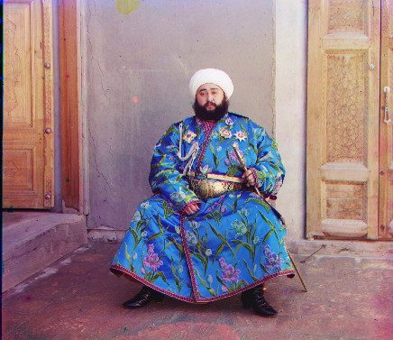
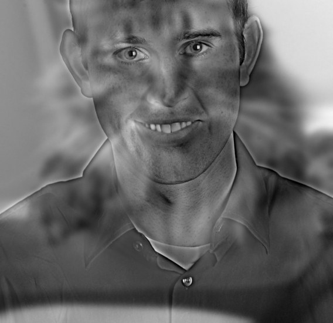

Projects
Each project is implemented in Python with NumPy, with the core algorithms written from scratch.

Image Alignment using Pyramid Structures
Reconstructs full-color images from Prokudin-Gorskii's early-1900s glass plate negatives by aligning the R, G and B channels with a coarse-to-fine image pyramid.
Read case study →
Fun with Filters and Frequencies
2D convolution from scratch, edge detection, unsharp masking, hybrid images, and multiresolution blending with Gaussian and Laplacian stacks.
Read case study →Alignment Results at a Glance
How far the green and red channels had to move to line up with blue, for each full-resolution plate in Project 1. The pyramid recovers shifts of more than 100 pixels while only searching ±15 pixels at each level.
Shift magnitude = √(dx² + dy²), from the offsets reported in Project 1.
Try It: Splitting a Signal by Frequency
The core idea behind hybrid images and blending in Project 2. A Gaussian blur keeps the low frequencies; subtracting it from the original leaves the high frequencies. Drag the slider to change σ.
Larger σ blurs more, so the low-pass curve gets smoother and more of the detail moves into the high-pass curve.
Skills Demonstrated
Techniques implemented across both projects.
Exhaustive and pyramid-based alignment with L2 and NCC scoring.
Convolution from scratch, Gaussian filters, and Fourier analysis.
Finite differences, gradient magnitude, and derivative-of-Gaussian filters.
Hybrid images and seamless multiresolution blending.
Choosing between accuracy and speed, e.g. NCC vs. L2 and loops vs. vectorization.
NumPy, SciPy, OpenCV, scikit-image, and Matplotlib.